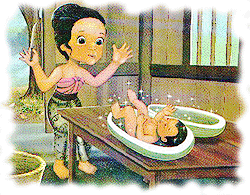
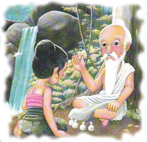
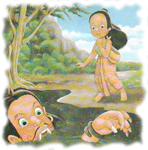

Timun Mas
( Cerita Rakyat )
Mbok Sirni namanya, ia seorang janda yang menginginkan seorang anak agar dapat membantunya bekerja. Suatu hari ia didatangi oleh raksasa yang ingin memberi seorang anak dengan syarat apabila anak itu berusia enam tahun harus diserahkan keraksasa itu untuk disantap. Mbok Sirnipun setuju. Raksasa memberinya biji mentimun agar ditanam dan dirawat setelah dua minggu diantara buah ketimun yang ditanamnya ada satu yang paling besar dan berkilau seperti emas.
Kemudian Mbok Sirni membelah buah itu dengan hati-hati. Ternyata isinya seorang bayi cantik yang diberi nama timun emas. Semakin hari timun emas tumbuh menjadi gadis jelita. Suatu hari datanglah raksasa untuk menagih janji Mbok sirni amat takut kehilangan timun emas, dia mengulur janji agar raksasa datang 2 tahun lagi, karena semakin dewasa,semakin enak untuk disantap, raksasa pun setuju. Mbok Sirnipun semakin sayang pada timun emas, setiap kali ia teringat akan janinya hatinyapun menjadi cemas dan sedih.
Suatu malam mbok sirni bermimpi, agar anaknya selamat ia harus menemui petapa di Gunung Gundul. Paginya ia pergi. Di sana ia bertemu seorang petapa yang memberinya empat buah bungkusan kecil, yaitu biji mentimun, jarum, garam, dan terasi sebagai penangkal. Sesampainya dirumah diberikannya empat bungkusan tadi kepada timun emas, dan disuruhnya timun emas berdoa.
Paginya raksasa datang lagi untuk menagih janji. Timun emaspun disuruh keluar lewat pintu belakang oleh Mbok sirni. Raksasapun mengejarnya. Timun emaspun teringat akan bungkusannya, maka ditebarnya biji mentimun. Sungguh ajaib, hutan menjadi ladang mentimun yang lebat buahnya. Raksasapun memakannya tapi buah timun itu malah menambah tenaga raksasa. Lalu timun emas menaburkan jarum, dalam sekejap tumbuhlan pohon-pohon bambu yang sangat tinggi dan tajam.
Dengan kaki yang berdarah-darah raksasa terus mengejar. Timun emaspun membuka bungkusan garam dan ditaburkannya. Seketika hutanpun menjadi lautan luas. Dengan kesakitannya raksasa dapat melewati. Yang terakhit Timun Emas akhirnya menaburkan terasi, seketika terbentuklah lautan lumpur yang mendidih, akhirnya raksasapun mati. " Terimakasih Tuhan, Engkau telah melindungi hambamu ini " Timun Emas mengucap syukur. Akhirnya Timun Emas dan Mbok Sirni hidup bahagia dan damai.